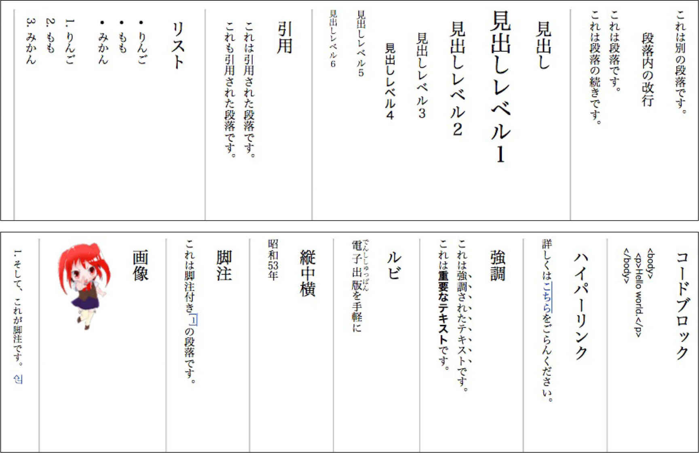
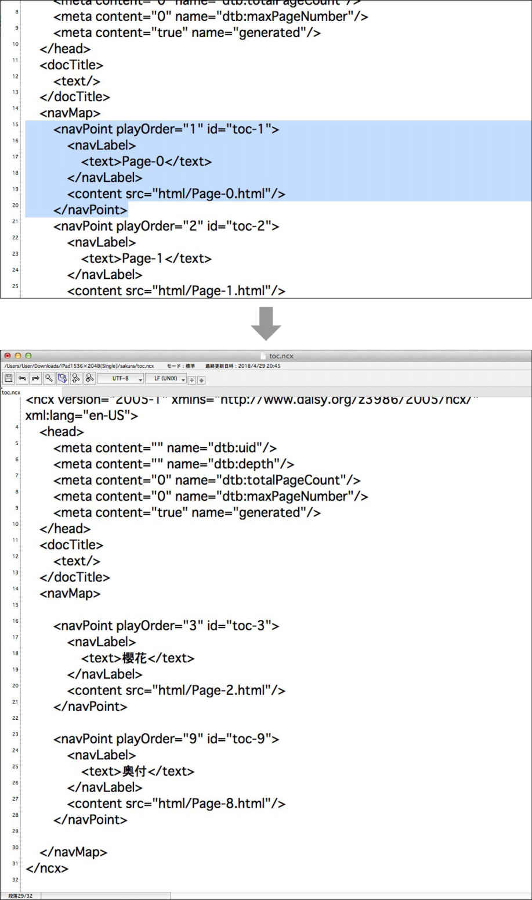
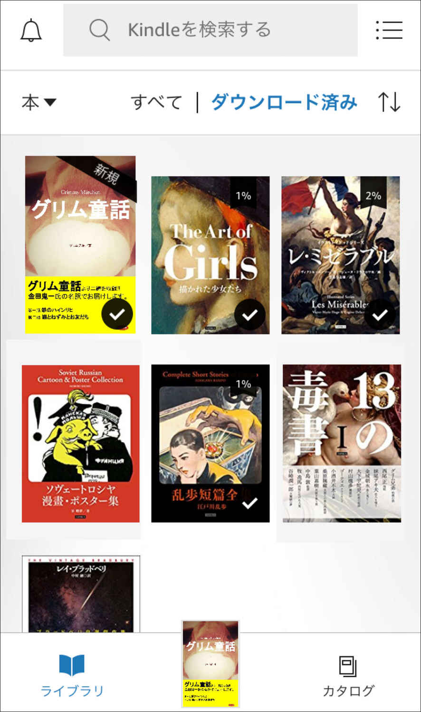

| iPhoneで出版するKindle direct publishing | |
| TAPIRUS & 渋谷獏 | |
| TAPIRUS (2018) | |
Contents
0-1 はじめに
0-2 電子書籍の基礎知識
0-3 道具の準備
Part1
1-1 電子書籍の作成
─でんでんコンバーター
1-2 電子書籍の出版
─Kindleストア
1-3 電子書籍の作成
─ライブドアブログ
1-4 電子書籍の作成
─Googleドキュメント
Part2
2-1 表紙と挿入図版の作成
2-2 固定型電子書籍の作成
Part3
3-1 Kindleストアへの登録
3-2 著作権・法律・モラル
3-3 iOSでの実機確認
3-4 文字校正の方法
はじめに
本書では、アップル社製のスマートフォンであるiPhone端末のみを使用し、Kindleダイレクト・パブリッシングでの｢流動型の縦書き電子書籍｣
の作成、および販売方法を解説します。
iPhoneだけで作成できる方法を中心にご紹介しますが、今後のステップアップを考え、パソコンを使用した方法も合わせてご紹介します。
なぜiPhoneなのか？
ひとつめの理由は、日本でのiPhoneのシェア率はiOS 66.62％
に対しAndroid 32.74％
と、いまだに高いシェアを保っているということ。ふたつめの理由は、Android端末で対応しているWebサービスやアプリなどが、iPhone端末では未対応の場合が多いということです。
つまりiPhoneは、日本でもっとも多くの方が使用している端末機器でありながら、電子書籍を作成する道具
としてはかなり困難な環境であり、iPhoneを主軸にした電子書籍作成の解説書は、多くの方々の需要があるのではないかと考えました。
なぜKindleストアなのか？
米Amazonは、元々書籍だけを販売するインターネットストアとして1995年に始まりましたが、現在では百貨店さながらにありとあらゆる商品を取り扱う「世界最大の巨大インターネットストア」に成長しました。
｢Kindleストア｣ はその中の電子書籍を販売する一部門として存在します。
電子書籍だけではなくアナログの紙の書籍、または電化製品、衣料品、食料品、玩具──とさまざまな商品を求める人々が訪れるということが、他の電子書籍ストアと大きく異なる点でしょう。
それゆえに元々の販売規模が大きく、電子書籍だけを取り扱うストアと比べ、ご自身の書籍がより多くの人の目に留まる機会が増えるといえます。
規模の大きさはそのまま使い勝手の良さにもつながっており、電子書籍の制作を支援するKindle独自のアプリケーションや、入稿時（データのアップロード）に受け付けてくれるファイル形式の豊富さ、著者セントラルをはじめ出版後のケアなども充実しています。
このような点から、本書の読者にご紹介するにはもっとも適切な電子書籍ストアだと考えました。
＊ 近い事業形態に ｢楽天Koboライティングライフ｣ がありますが、支援アプリの有無、対応データの豊富さや販売規模など、総合的にみてKindleストアがかなりリードしている状況です。
なぜ縦書きなのか？
2011年に ｢EPUB3.0｣ 形式が登場するまでは、そもそも縦書き表示自体が電子書籍では未対応という状況でした。
それ以後も、欧米では横書きが標準ということもあり、いまだに縦書き対応をしていないWebサービスやアプリなどが多く、縦書きの電子書籍の作成はやや難易度が高いといえます。
ブログなどで横書きの文章を読む機会は増えたものの、やはりある程度の長さの文章は縦書きでないと読みにくい、または小説などの作品は縦書きでないとしっくりこない、などと感じる方はまだまだ多いでしょう。
以上のような理由から、本書では ｢流動型（リフロー型）縦書き電子書籍｣ の作成にしぼって解説していきます。
＊ 本書は図版の多い解説書になりますので、読み易さを考慮して横書きにしています。
電子書籍の基礎知識
本格的な制作に入る前に、電子書籍の基礎知識をお伝えします。
基礎を知らなくても電子書籍の作成に支障はありませんが、後々のことを考えるとやはりある程度の基礎知識は持っておいたほうがよいように思いますので、簡単ではありますが触れておきます。
流動型と固定型
現在の電子書籍は、流動型
（リフロー型）と固定型
（フィックス型）という2つのフォーマットが主流となっています。
流動型は ｢小説・論文・ビジネス書｣、固定型は ｢絵本・漫画・写真集・雑誌｣ などによく使われています。
流動型は文字の表示領域にフォントや画像などの材料を流し込むように表示させているため、購入者が文字の大きさや形（フォントの種類）を変更することが可能です。
一方の固定型は、1ページを1枚の画像で表示させているため、購入者が文字の大きさや形を変更することは不可能です。
厳密に言うと、画像ではなくHTML指定による絶対配置の固定型 、固定型と流動型の切り替えができるハイブリッド型 、または画像などの配置がくずれにくい変則的な流動型 などもあるのですが、実際に販売されている電子書籍は、文字メインの流動型、画像メインの固定型の２種類がほとんどです。
電子書籍のファイル形式
電子書籍ストアが受け付けてくれるフォーマットには ｢PDF・EPUB・TXT・MOBI｣ などいくつかありますが、現在では｢EPUB3.0｣
形式が事実上の国際標準フォーマットになっています。
Kindleストアでは、独自形式の ｢MOBI｣ にDRM（著作権保護機能）を付加した ｢AZW3｣ ファイルを使用しています。
ですが ｢EPUB｣ と ｢MOBI｣ は元々同じ技術で作られていたために互換性が強く、Kindleで販売する場合は ｢EPUB｣ から ｢MOBI｣ へはアップロードするだけで自動的に変換されますので、Kindleストアでも ｢EPUB3.0｣ 形式で作成しておけばまず問題は起こりません。
本書でも、｢EPUB3.0｣ 形式での作成方法を中心に紹介していきます。
実は中身はHTMLで動いている
EPUBファイルに関しては、解凍ソフトを使用することで簡単に中身を展開できます。
実際に解凍ソフトで展開してみると、下図のように電子書籍の中身がWebサイトなどと同じ ｢HTML｣ でできていることが確認できます。
Webサイト用のHTMLが電子書籍に全て転用できるわけではないのですが、HTML指定をすることである程度特殊なレイアウトを作成することが可能です。
電子書籍の構成要素
必ずしも下図のような構成要素がなくても出版は可能ですが、流動型電子書籍の場合、出版社の電子書籍に見劣りせず顧客満足度も充実させるためには、これだけの要素はあった方が望ましいと思います。
現在の電子書籍ストアの状況
男女とも大手3社はだいたい同じ比率で、やはり1位はダントツでKindleストアです。
すべてのストアが個人出版を受け付けてはいませんが、大手3社に関しては大丈夫です。ただし、AppleのiBooksストアは、個人の場合の発行者名は実名でないと登録できないようです。
MMD研究所のデータに全体の男女比率はありませんが、2014年の楽天koboの調べでは ｢男65%：女35%｣
という調査結果が出ていますので、Kindleストアでもほぼ似たような比率と考えられます。
また、日本では電子書籍の浸透はやや遅れているという印象がありましたが、2017年のインプレス社調べのグラフを見ていただくと、着実に市場が拡大していることが分かります。
そもそも紙の書籍と何が違う？
双方とも利点もあり、欠点もあります。
文字の読み上げや動画・音声などを取り入れたり、ポップアップなどを表示させたり、何千冊という書籍をひとつのデバイスに入れて持ち歩いたりできるのは、デジタルならではの機能と言えるでしょう。
一方のアナログでは、書籍を自由な大きさや形で──たとえば1メートルの長細い絵本や、手のひらサイズの豆本、または飛び出す仕掛け絵本、カバーの素材もお金をかければ毛皮にすることも可能です。
これらの特徴は、アナログの書籍が単体で完結するのに対して、デジタルの書籍はビデオやCDのようにハードウェア（端末機器）とソフトウェア（電子書籍）という関係であることに起因します。
電子書籍と紙の書籍はよく似ている部分もありますが、今後はいろいろな技術が登場し、また端末側の性能も向上することで、アナログの書籍とはかなりかけ離れた電子書籍が主流になるかもしれません。
道具
の準備
本格的に原稿・表紙・図版などの作成に入る前に、道具（アプリやID登録など）の準備をしましょう。
これらの登録は実際に必要になるまでしなくても、先にすませておいてもどちらでもOKです。
1. 先に用意するもの
‣ メールアドレス
‣ 銀行口座
最低限この2つは必要になりますので、先に用意しておいてください。
銀行口座に関しては、現在お使いの口座でOKですが、銀行によってはAmazonから入金の際に手数料がかかる場合がありますので、ご自身の銀行に問い合わせてください。
ぼくは ｢新生銀行｣ を使用していますが、こちらだと手数料は無料です。
2. 必要なID登録
AmazonのID登録
＝Kindleストアへの登録に必要です。Amazonで日頃使用しているIDをKindleストアでもそのまま使用できます。新規で作られる場合は、Amazonのトップページから新規登録してください。
➡https://www.amazon.co.jp/
Kindleストアへの登録
＝Kindleストアの登録は少し複雑なので、後半のページに詳しく入力方法をご紹介しています。
➡Part 3-1.Kindleストアへの登録
をご覧になってください。
AppleストアのID登録
＝今回使用するiPhone用アプリのインストールに必要です。こちらはiPhoneの ｢App Store｣ のアイコンを押して、どれでもかまわないので、無料のAppの ｢入手｣ ボタンを押してください。すると ｢Apple IDを新規作成｣ の画面が出てきますので、そちらで新規登録してください。
有料のアプリを入手する場合は、別途銀行口座の登録が必要です。
DropboxのID登録
＝他にも色々なストレージサービスがありますが、今回はこちらのサービスを使用します。まずDropboxのトップページから新規登録してください。
➡Dropbox
その後、Appleストアから ｢Dropbox｣ で検索して、スマホ用のアプリを入手して使用してください。
GoogleのID登録
＝GoogleスライドとGoogleドキュメントを使用する際に必要になります。Googleの新規アカウント作成ページから新規登録してください。
➡Google
3. アプリのダウンロード
スパホ用のアプリに関しては、全てAppleストアから検索して｢入手｣
ボタンを押してダウンロードしてください。
Googleスライド ＝プレゼンテーションソフトです。表紙や複雑なレイアウト画像の作成に使います。
Googleドキュメント ＝テキストエディターです。Googleドキュメントで電子書籍を作成するときに使います。
iText Express ＝縦書き表示の可能なテキストエディターです。縦書き原稿を作成するときに便利です。
K-Zip Free ＝圧縮ファイルの解凍アプリです。表紙などの画像を作成するときに使います。
kindle （iOS版）＝iPhoneまたはiPAD用のKindleアプリです。アマゾンの他の商品と同じように、ブラウザーから購入することでkindleアプリで読むことができます。
4. 有料だけど超便利グッズ
Bluetooth対応のキーボード
＝長い原稿を書くのにさすがにスマホの画面キーボードではつらい、でもパソコンは高いから購入はしたくない、という方にオススメです。
➡あとがきにかえて
をご覧になってください。
100円均一のタッチペン
＝指の太い男性の方が、スマホの細かい画面操作をするときに便利です。
➡あとがきにかえて
をご覧になってください。
5. 参考データのリンク
これは本書の中で実際に作成したデータ類です。
でんでんコンバーターなどで使用するテキストや、Googleスライドで使用するフォーマット、完成したEPUBデータなどを本書の紹介ページにアップしています。でんでんコンバーターの記述記号一覧や、iPhoneでは打てない全角のスペースなどのテキストも作成しましたので、コピーして使ってください。
｢Text・Format・Data｣
それぞれの文字を押して、K-Zip Freeに保存して解凍してください。（少し時間がかかる場合があります）
➡こちらからダウンロード
6. Kindleコミッククリエーター
これは漫画・画集・写真集などの固定型電子書籍を作成するソフトウェアです。
WinかMacどちらかのパソコン環境が必要になってきますが、Kindleへの入稿データであれば、こちらを使用するのが王道だと思います。
➡https://www.amazon.co.jp/gp/feature.html?ie=UTF8&docId=3077699036
電子書籍の作成─でんでんコンバーター
できること
‣ EPUB3.0（流動型）の書き出し
‣ HTMLと論理目次の作成
‣ 縦中横・ルビ・脚注等の指定
‣ 図版・写真などの挿入
‣ HTMLタグの指定
できないこと
‣ 大きなデータの変換
‣ 固定型電子書籍の作成
1つ目の電子書籍の作成方法として、｢でんでんコンバーター｣
をご紹介します。
こちらのサービスは、HTML目次と論理目次の自動作成、縦中横・ルビ・脚注などの指定、図版の挿入などができ、非常に完成度の高い電子書籍の作成が可能です。
後半で紹介する ｢livedoorブログ｣ や ｢Googleドキュメント｣ による作成方法と比較すると、やや難易度は高いのですが、現時点ではお金をかけずに ｢縦書き流動型の電子書籍｣ を作成するのに、もっともオススメできる方法だと考えます。
本書では、ぐっと難易度を下げて ｢HTML｣ などは使用しない方法を中心にお伝えします。
できないこととして2つあげています。
1つ目の ｢大きなデータの変換｣ に関しては、HPのトップに ｢10万文字｣ を越えるテキストはアップロードしないようにとの注意書きがあります。
とはいえ、これは文庫本でいうと約160ページの長さに相当しますので、一般の方が書かれる文字量としては十分でしょう。もし、字数がオーバーしてしまうような大長編を書かれる場合は、書籍を分冊にして対応してください。
2つ目の ｢固定型レイアウト｣ の対応に関しては、文字主体の流動型の作成サイトなのでこれは仕方ないでしょう。両方に対応しているサイトはあまりないですしね。
1. テキスト原稿の作成
｢でんでんコンバーター｣ で電子書籍を作成する前に、まず
｢でんでんエディター｣
のサイトにアクセスしてください。
初期画面では主な記述記号（でんでんマークダウン）が書かれたダミー原稿が表示されます。
上部にある ｢Preview｣ ボタンを押すと、横書きの仕上がり状態が表示されます。その下にある ｢テーマを選んでね｣
のボタンから縦書き表示を選ぶと、下のような縦書きの仕上がり状態の表示に切り替わります。

｢Edit｣
ボタンを押すと初期画面に戻ります。
画像を比較すると、実際の仕上がりでは表示されない ｢###｣ や ｢{ ǀ }｣ のような記述記号で、見出しの大きさやルビなどの指定をしていることが分かります。
パソコンではこの入力画面で直接指定していくのですが、iPhoneの小さな画面で作業するのはかなり困難なため、本書では ｢作成前の道具の準備｣ で紹介したアプリ ｢iText Express｣
の使用をオススメします。
でんでんエディターは、でんでんコンバーターの記法 ｢でんでんマークダウン｣ を簡単に指定できるように作られていますので、パソコンで作業する場合はこちらで指定してください。
では実際に、完成した原稿に記述記号を書き足してみましょう。テキストは金田鬼一訳 ｢完訳グリム童話｣ を使用しています。
‣見出しの指定
見出しのレベルは1〜6まで用意されており、1が一番大きく6が一番小さい見出しです。今回は章見出しに ｢3｣、本文中の小見出しに ｢4｣ を使用していますが、いろいろ試してみて好みの大きさを見つけてください。
‣ルビの指定
ルビを振りたい漢字を ｢{｣ と ｢ǀ｣ ではさみ、次にルビのふりがなを入れて最後に ｢}｣ で閉じます。
‣文字の強調の指定
｢*｣ ひとつではさんだ文字は圏点
が付きます。｢**｣ ふたつではさんだ文字は太文字
（ボールド指定）になります。
‣行を空ける指定
段落間の行を空ける場合は下図のように ｢<p><br /></p>｣ と行間に打ち込んで下さい。
‣改ページの指定
改ページしたい箇所で ｢===｣ 記号を3つ以上続けて入れて下さい。長いぶんには問題ないようですので、好みの長さで使用してください。（テキストデータを分けることでも、改ページ指定の代わりになります）
だいたい上の5つくらいを使用すれば、一般的な小説やエッセイなどの電子書籍であれば十分でしょう。複雑なことはあまり覚えたくないという方は、このあとは読まなくてもOKです。
‣引用の指定
｢>｣ を段落のはじめに付け、段落の終わりに1行改行を入れると、｢>｣ の位置から改行1行空きまでの本文の上下に空きができます。
‣リストの指定
｢*＋半角スペース｣ を文字の前に付けると、実際の電子書籍では中黒の ｢・｣ に代わり、2行目以降の行頭が1文字下がったリスト表示になります。中黒の代わりに数字のリストも選べます。
‣ハイパーリンクの指定
図のようにリンクしたい文字を ｢[ ]｣ 記号ではさみ、その後に（http://......）とURLを指定すると外部のWEBページにリンクを貼れます。ただしAmazonのガイドラインで、リンクの貼れないページもあるので注意が必要です。
‣脚注の指定
図のように本文中に [^1] と指定し、離れた場所の注釈に [^1]: と指定すると、相互にリンクが貼られます。 ただし、縦組だと脚注側の数字が横倒しのままで表示されるようです。
これ以外に｢縦中横｣ ｢コードブロック｣ ｢画像｣
があります。
｢縦中横｣
設定はでんでんコンバーターにアップロードするときにも指定できますので、ここでは無視して下さい。
｢コードブロック｣
は仕上がりの時には見えない ｢記述記号｣ をあえて表示させる方法です。技術書を書かれる方以外はあまり使用することはないでしょうから、これも無視して下さい。
｢画像｣
は本文中に ｢挿絵・写真・図版｣ などを挿入するための指定です。画像の挿入に関しては、少し手順が違ってくるので、この章の最後で別途説明いたします。
もっと細かい指定方法が必要な場合は、サイト上部の ｢でんでんマークダウン｣ ボタンを押して下さい。各々の詳しい説明や、直接書き込んでも有効な ｢HTMLタグ｣ などが掲載してあります。
これらの設定が済みましたら、テキストファイルをDropboxに保存して下さい。
2. でんでんコンバーターで変換
次に画面上部にある｢でんでんコンバーター｣
を押して移動して下さい。
｢アップロードしてね｣
の下のファイル選択を押し、先ほどDropboxに保存したテキストファイルを選びます。本のタイトルと作成者（著者名）を入力し、今回は右から左の ｢縦書き｣ を選びます。
｢お好みでどうぞ｣
の所は、デフォルトのままでもOKです。扉ページにチェックを入れるとHTML目次の前に大扉が付きますので、今回はチェックしてみましょう。
｢作成したEPUBをプレビューする｣ をチェックし、｢変換｣ を押します。
このあとiPhoneまたはiPadでは、Dropboxに保存するかiBooksで開くかを聞いてきますので、まずはチェックのために｢iBooksで開く｣
を選びます。
iBooksで開くと、図のように電子書籍の仕上がりを確認する事ができます。
ここでの見え方で問題がなければ、Kindleで出版してもそれほど大きな失敗はないといえます。が、やはりiBooksとKindleは別物なので、あくまで校正用の初校
と考えてください。
HTML目次と論理目次が機能しているかどうか、タグなどで設定したルビや太字などが反映されているかどうか、文字の誤字脱字がないかどうか、などを入念に確かめてください。
文章の効率のよいチェック方法は、Part 3-4 ｢文字校正の方法｣ に詳しく書いてありますので、合わせて読んでください。
iBooksで十分なチェックを済ませて修正も終りましたら、先ほどと同じ方法でもう一度EPUBに変換し、今度は｢Dropboxで読み込む｣
を選んで保存してください。
これで、業界標準フォーマット ｢EPUB3.0｣ の入稿ファイルができ上がりました。
このあとの章ではAmazon Kindleストアへの入稿方法をお伝えしますが、このEPUB3.0のフォーマットであれば他の電子書籍ストアで販売することも可能です。
3. ｢画像｣ の挿入方法
iPhoneまたはiPadの画面では少し操作しづらいのですが、Dropboxを利用して画像を挿入する場合は、リンク形成のためにでんでんエディターの画面で操作する必要があります。
まずでんでんエディターのページに飛び、右側の ｢×｣
を押しダミーのテキストを消去してください。
白紙の状態になったら、先ほどiText Expressで作成した原稿をコピー＆
ペーストして、画像を挿入したい箇所を一行空け、右から2番目の ｢画像の挿入｣
ボタンを押してください。
これでDropboxのサイトにリンクしますので、作成しておいた図版画像を選択して挿入します。
iPhoneやiPadで見ると、スクロールバーが表示されないのですが、画面の右端の辺りを軽くなでると上下にスクロールされます。このとき指ではなくタッチペンがあると動かしやすいようです。
括弧の中の [代替テキスト
] という文字部分は、画像の説明文が不要な場合は図のように削除してもOKです。
指定が終りましたらプレビューで確認し、左側の ｢ファイルに保存｣ ボタンを押してDropboxに保存してください。
ここから先は、｢でんでんコンバーターで変換｣ の手順と同じ行程でOKですが、このDropboxのリンクはしばらくすると消えてしまうので、なるべく早めにEPUB変換をする必要があります。
‣ブログを利用した画像挿入
ブログをお持ちの方限定の裏技
です。ブログの画像フォルダに材料をアップロードして、画像のURLを利用するという方法があります。
Dropboxと違い公開された固定URL
になりますので、テキストエディターにあらかじめURLを書き込んでおいて、そのままでんでんコンバーターで変換することができます。
URLを知っていると誰でも見られる状態にはなりますが、リンクが外れないので挿入画像が多い場合は便利な方法です。
電子書籍の出版─Kindleストア
でんでんコンバーターで作成した ｢EPUB3.0｣ のファイルを、Kindleストアへ｢アップロード｣
してみましょう。
まずはお手持ちのAmazonIDでKDPにサインインし、本棚にある｢新しい本を作成｣
のアイコンを押してください。
1. Kindle本の詳細
Kindle本の詳細画面が現れますので、必要な情報を打ち込んで行きます。画像はあくまで一例ですが通常この辺りを入力しておけば問題はないでしょう。
必須項目の｢ローマ字｣ の入力
に関しては、特殊記号などを使用するとエラーが起こりますので、一般的な英数字のみで打ち込んで下さい。
｢内容紹介｣
は表示枠がとても小さいので（パソコンだと枠を広げる事が可能）テキストエディターで別途作成しておいたものをコピーすると便利です。
｢カテゴリーの設定｣
は2つまで選ぶ事ができます。7つの大項目に分かれていて ｢＋｣ マークを押すと、サブカテゴリが表示されます。かなり項目は多いのですが、カテゴリー選びに失敗すると読者も書籍を探しにくくなりますので、適切なカテゴリーを選んで下さい。
ただし、出版後もカテゴリーの変更は何回でもできますので、それほど慎重にならなくても大丈夫です。
すべての入力を済ませ｢保存して続行｣
を押すと、次の ｢Kindle本のコンテンツ｣ に移ります。
2. Kindle本のコンテンツ
‣原稿項目
デジタル著作権
（DRM）を ｢いいえ｣ にするとコピーが容易にできてしまいますので、ご自身の著作物を守るためにDRMを有効にする｢はい｣
を選んで下さい。
ページめくり方法
は今回は右から左の｢縦書き｣
を選びます。
その下の｢電子書籍の原稿をアップロード｣
のボタンを押し、先ほどDropboxに保存したEPUBファイル（またはdocxファイル）を選択します。しばらく待つと ｢原稿（◯◯◯.epub）を無事アップロードしました｣ と表示されます。KindleフォーマットのMOBI形式ではなくても、対応しているファイルをKindleストアへアップロードすることで自動的にMOBI形式に変換されます。
‣Kindle本の表紙の項目
｢参照｣
ボタンを押して、用意しておいた表紙のjpg画像をアップロードしてください。
‣Kindle本のプレビュー項目
｢プレビューアーを起動｣
のボタンを押し、アップロードしたデータの確認を行います。iPhoneおよびiPadの環境の場合、このプレビューアーで確認するのがもっとも確実な方法です。小さな画面ではありますが、見た目でおかしな所がないかどうかを全ページめくって確認してください。
この確認の作業は、パソコンをお持ちでしたら｢Kindle Previewer｣
というパソコン用のソフトを使用してパソコンの大きな画面で行うと便利です。
‣Kindle 電子書籍 ISBN項目
KindleストアではISBNや主コードの代わりに｢ASIN｣
というKindle独自の管理番号を使用していますので、電子書籍の場合は空欄のままでOKです。出版社名とそのローマ字表記だけ入力します。
すべての入力を済ませ｢保存して続行｣
を押すと、次の ｢Kindle本の価格設定｣ に移ります。
3. Kindle本の価格設定
‣KDPセレクトへの登録
こちらをチェックするとKDP専属契約となり、他の電子ストアでの販売やブログなどでの公開が、次の契約更新までの90日間
はできなくなります。
その代わり、通常だと35％
のロイヤリティが70％
の取り分になり、そのほか読み放題サービスへの登録、割引キャンペーンや無料キャンペーンなど、より多くの読者へアピールできるプロモーションを実施することができますので、Kindleのみの販売でもよいという方は専属契約を結ぶことをオススメします。
（ただし、販売者になんらかの著作権があると判断された本でなければ登録は不可）
‣出版地域
すべての地域を選ぶと、日本を含めた14の地域
（国）で販売されます。もし、日本限定で販売したい場合は、特定の出版地域を選び日本だけをチェックしてください。（日本とフランスとアメリカのみ、などの限定販売も可能）
‣ロイヤリティと価格設定
35％
と70％
がありますが、KDPセレクトへの登録をして250円〜1250円
で売る場合は70％
を選んで下さい。
‣希望小売価格の設定
初期設定ではAmazon.comになっていますが、Amazon.co.jp
に切り替えて下さい。すると金額を打ち込む箇所が ｢$｣ から｢￥
｣
マークに変わりますので、こちらに70％
の専属契約の場合は250円〜1250円
までの金額、35%の場合は99円〜2万円
までの金額を打ち込んでください。
Amazon.co.jpに打ち込むことで日本の価格が基準となり、他の13の地域（国）の価格が自動的に計算されますが、それぞれ個別の金額を設定することも可能です。
打ち込んだ金額から消費税が引かれ、その金額の70％ の金額から配信コスト（1MB1円で最大10円）が引かれた金額がロイヤリティとして表示されます。
例えば ｢300｣ と打ち込むと、日本の消費税８%が引かれた金額 ｢￥
278｣ が表示されます。その金額の70％
から、仮にデータ容量が2MBだと配信コストに ｢￥
2｣ と表示され、合計の箇所には70％
の金額195円から2円引いた金額、｢193円｣
がロイヤリティとして表示されます。
これが日本のAmazonで専属契約300円の本が1冊売れたときに、実際に銀行に振り込まれる金額になります。
ただし、10MBを越えるデータの場合は、Wi-Fi環境でのダウンロードしかできなくなる代わりに配信料がかからなくなります。
Kindle MatchBookと本のレンタルは無視して、最後に｢Kindle本を出版｣
ボタンを押すと、Kindle側にデータが送られて審査が始まります。出版ボタンを押してしまうと、審査を終えて一度出版されるまではデータをいじれない状態になりますので、とりあえず｢下書きとして保存｣
ボタンを押しておきましょう。
再度、各項目の不備がないかの総チェックを行ったのち ｢Kindle本を出版｣ ボタンを押して下さい。
本棚のステータスを触ると ｢72時間以内に審査が終わり出版される｣ という表示が出てきますが、経験上よほど問題のある内容でなければ、次の日の朝にはメールが届いてKindleストアに書籍が並びます。
これで無事、Kindleで作家デビューとなります。
注意 このKindleストアへのアップロード方法は、Part 1-3 ｢電子書籍の作成─ライブドアブログ｣ とPart 1-4 ｢電子書籍の作成─Googleドキュメント｣ と共通項目になります。
電子書籍の作成─ライブドアブログ
できること
‣ EPUB3.0（流動型）の書き出し
‣ HTMLと論理目次の作成
‣ 図版・写真などの挿入
‣ HTMLタグの指定
‣ EPUB3.0（固定型）の書き出し
できないこと
‣ 大きなデータの変換
‣ 縦中横・ルビ・脚注等の指定
＊
‣ 階層のある目次の作成
＊
＊
はHTMLを直接いじる事で可能
2つ目の電子書籍の作成方法として、｢ライブドアブログ｣
をご紹介します。
書き溜めておいたブログに、カテゴリーや期間などを指定してファイルを書き出すだけという、とても簡単に電子書籍の作成ができるWEBサービスです。
書き出したファイルは｢EPUB3.0｣
形式なのでKindleストア以外への入稿もそのままでOKです。
ただし簡単に作成できるが故に、カスタマイズ性はでんでんコンバーターほど高くはなく、既存のフォーマットにのっとったデザインになってしまいます。
縦中横やルビ機能、目次の階層化などはHTMLタグを直接書き込む必要がありますので、複雑な内容の書籍を作られる場合はでんでんコンバーターのほうが作成が簡単といえます。
それと、ブログのサービスを電子書籍作成ツールだけに使用するのは、やや倫理的にお行儀が良くないとも思います。一定期間ブログとして連載をし、ネット公開したあとに電子書籍として販売するのが正しい使い方といえるでしょう。
1. 新しいブログの設定
まずは、WEBブラウザーでライブドアブログにログイン
してください。
｢ブログを書く｣
→｢新しいブログを作る｣
を押し、ブログのタイトルとURL（サブドメインを使用すると◯◯.blog.jpというサイト名になります）を設定し、｢ブログを作成する｣
ボタンを押してください。
次に｢ブログ設定｣
のボタンを押し、デザイン／ブログパーツ設定の｢PC｣
のボタンを押してください。
ブログのデザインはどれでもいいのですが、今回は縦書き電子書籍の作り方の本なので、｢縦書き(β
)｣ というデザインを選んでみました。縦書き表示の簡単な確認ぐらいにはなると思います。
画面を押し｢実行｣
ボタンを押すとデザインが適用されます。
2. ブログの投稿による原稿作成
このままWEBの画面で作業する事も可能ですが、文章の指定がしやすいスマホ用のアプリに切り替えます。
こちらで画面中央下の｢新規投稿｣
のボタンを押し、見出しにあたる文字をタイトルとして打ち込みます。
本文の入力欄に、iText Expressで作成しておいた｢指定などをしていないテキスト｣
を丸ごとコピーしていきます。
でんでんコンバーターの改ページにあたるのが、ブログの投稿になるので、目次に反映させたい見出しの数だけ投稿します。
今回使用する ｢グリム童話｣ は2つのお話と1つの奥付に分かれていますので、全部で3投稿に分けてブログを作成しました。
ルビや縦中横、挿入画像などを使用しない書籍であれば、以上で原稿の完成です。必要のない方は、次の2〜3は飛ばして｢4. EPUBの書き出し｣
を見てください。
3. ルビ・縦中横・圏点をHTMLで指定
今回はでんでんコンバーターに合わせて、ルビ・縦中横・圏点などを入れてみましょう。
作業画面の画面左下にある｢ソース編集｣
ボタンを押すと、図のようにHTMLソースが表示された状態になります。
それぞれ図ようなHTMLタグを書き足すことで、実際の電子書籍に反映されます。でんでんコンバーターの記述記号と比べると、HTMLタグがかなり複雑なことが分かります。
4. 本文中に画像を挿入
次に図版などの画像を本文の間に挿入しましょう。
まず、Dropboxに保存しておいた画像の ｢...｣ を選択し、｢エクスポート｣→｢画像を保存｣ で ｢写真｣ に画像を送ります。
挿入箇所にカーソルを持っていき、作業画面の左側にある｢カメラマーク｣
→｢アルバムから選ぶ｣
を押して挿入してください。

5. EPUBの書き出し
原稿ができ上がったらスマホ用のアプリを閉じ、WEBの画面に戻ります。
｢ブログ設定｣
ボタンを押し、一番下のその他にある｢EPUB書き出し｣
ボタンを押します。
本のタイトルと著者名を打ち込み、書籍のレイアウトの4つの中から今回は｢縦書き｣
を選びます。
表紙画像の設定は、Kindleでは表紙画像と本文は分けてアップロードするため、選択しなくてもOKです。逆にKindle以外で出版する場合はここで表紙画像を選択してください。
期間の設定と書き出す記事の状態やカテゴリなどを選ぶことで、必要な記事だけの電子書籍を作成することができます。
オプションの設定は、今回は｢画像を掲載する｣
と｢目次を作成する｣
だけを選びます。
挿入画像がある場合は｢大きな画像を縮小する｣
のチェックは外してください。
設定が終りましたら｢内容確認する｣
ボタンを押し、問題がなければ｢ファイルを書き出す｣
ボタンを押して下さい。
先ほどのでんでんコンバーターと同じく、Dropboxに保存するかiBooksで開くかを聞いてきますので、あとは前節の｢電子書籍の出版｣
と同じ手順を踏めば、縦書き流動型電子書籍を販売する事ができます。
注意 ライブドアブログでは固定型電子書籍の作成にも対応していますが、こちらはPart 2-2 ｢固定型電子書籍の作成｣ で詳しく説明いたします。
電子書籍の作成─Googleドキュメント
できること
‣ Kindle対応 ｢.docx｣ 形式の作成
‣ HTML目次の作成
‣ 文字装飾の指定
できないこと
‣ 高解像度の図版挿入
‣ 縦中横やルビなどの作成
‣ 論理目次（NXC）の作成
‣ 外部リンクの形成
‣ 固定型電子書籍の作成
問題点
‣ 行頭の謎の半角インデント
‣ 画像の低解像度化
３つ目の電子書籍の作成方法として、｢Googleドキュメント｣
をご紹介します。
できないことに多少目をつむれば、非常に簡単に電子書籍が作成できる方法です。HTML目次のみ、ルビなし、挿入図版もなし（または低解像度でもOK）という書籍であれば、1時間もあればできてしまいます。
少し問題点もありますが、まずは実際に作成してみましょう。
1. 本文の基本設定
まず ｢Googleドキュメント｣ のスマホ用アプリを起動してください。
新規作成の｢＋｣
ボタンを押し、新しいドキュメントを選び名前をつけて作成ボタンを押してください。ここにiText Expressで作成しておいた｢指定などをしていないテキスト｣
を丸ごとコピーします。
次に画面を長押しし、｢すべて選択｣ を選んで文字をオール選択します。
画面右上の｢A｣
ボタンを押し段落タブに切り替え、行揃えを一番右の｢両端揃え｣
、行間隔は｢2.00｣
を選んで下さい。
パソコンでは1.70、1.80などの細かい数値も設定できるのですが、iPhoneだと1.00、1.15、1.50、2.00の４段階しか選べません。文章の書き方によっては｢1.50｣
でも良いと思います。
本文の基本設定が終わったらオール選択をはずし、各々の設定をしていきます。
2. 各々の設定
‣見出しレベルの設定
見出しの設定をするときに少し注意が必要です。
iText Expressで ｢改行｣ を入れたテキストは、厳密には｢段落内改行｣
になります。このまま見出しの指定を行うと、改行のあとの文字列も見出しの大きさになってしまいます。
これを防ぐために、見出しの後ろにある ｢段落内改行｣ を消します。そのあとあらためて｢改行｣
を入れます。
この作業は、文字スタイルの変更が必要な見出し類だけでOKです。
次に、見出しにしたい文字の行にカーソルを持っていき、画面右上の｢A｣
ボタンを押します。
テキストタブで文字スタイルを標準テキストから ｢見出し1〜6｣ のいずれかに切り替えます。章見出しには ｢見出し1か2｣くらいを割り当てておくといいでしょう。この辺りは好みもありますので、いろいろと試してみてください。
‣文字を飾る
文字を選択し、右上の6つのアイコンを押すだけで、太字、斜体、文字色、アンダーラインなどの文字指定が簡単にできます。
今回は色々な機能で文字にアクセントを付けてみましょう。
脚注の文字はサイズ指定で11ptを9ptに下げて、少し小さめにします。
‣図版を挿入する
まず、Dropboxに保存しておいた画像の ｢...｣ を選択し、｢エクスポート｣→｢画像を保存｣ で ｢写真｣ に画像を送ります。
挿入したい箇所にカーソルを持って行き、上部の｢＋｣
→｢画像｣
ボタンを押して｢写真から｣
を選んで、写真に保存した画像を選択します。
‣改ページ
ここからページを改めたい箇所にカーソルを移動し、挿入から｢区切り改ページ｣
を選びます。
横線で区切られた状態になればOKです。
‣ハイパーリンクの指定
外部のWEBページにリンクを貼りたい文字を選び、｢＋｣
→｢リンク｣
を押し、URLを入力します。これで、実際に電子書籍ができたときに選んだ文字を押すと、ブラウザーが立ち上がり外部のWEBリンクに移動します。
‣目次の作成
最後に目次を作成します。
パソコン環境では見出しを設定することで目次の自動作成ができるのですが、スマホ用アプリだとひとつずつリンクを貼る必要があります。先に説明したハイパーリンクを貼る方法の応用で、書籍内リンクを貼っていきます。
外部リンクと同じ方法で、あらかじめ設定しておいた｢見出し｣
を選んで、対応するリンクを貼っていきます。
ここで作成したHTML目次は書籍の好きな場所に作成できるので、今回は最終ページにも同じものをコピーして入れてみました。長い書籍であれば、章の終わりごとに目次があると便利かもしれません。
3. 完成原稿をdocx形式で保存
原稿の指定が終れば、最後に右上の ｢...｣ マークから ｢共有とエクスポート｣→｢コピーを送信｣→｢docxで保存｣ を選び、Dropboxにファイルを保存してください。
あとは前節の｢電子書籍の出版｣ と同じ手順を踏めば、縦書き流動型電子書籍を販売する事ができます。
4. 問題点について
作成自体はこのように非常に簡単に行うことができるのですが、多少の問題点があるので少し詳しく説明します。
ひとつめは、｢縦中横機能｣
がないことです。
半角の英数字を使用すると、実際に縦書きの電子書籍が出来上がった時に横倒しに表示されてしまうので、図のように全角の英数字か、漢数字やカタカナに語句を置き換える必要があります。
ふたつめは、｢画像の低解像度化｣
です。
Wordファイル（.docx）で保存した時までは高解像度だった画像が、Kindle側で変換すると自動的に解像度が下げられてしまいます。
最初からWordファイルで作成しても同じ結果になることから、個人の方が作成したKindle本で、図版の解像度が極端に低いものが多いのはこの仕様のせいではないかと推測しています。
最後に、｢謎の半角スペース｣
の問題です。
iPhone環境のGoogleドキュメントで原稿を作成すると、実際できあがった電子書籍の段落行頭に｢謎の半角スペース｣
が入ってしまいます。
Googleドキュメントで作成すると、行頭に｢ ｣
というHTMLタグが入ってしまい、これが半角スペースの字下げの原因になっているようです。
BluetoothキーボードをiPhoneにつなぎ｢シフト＋リターン｣ で段落内改行を入れてからKindleで変換すると、謎の半角スペースは解消されるのですが、iPhoneやiPadにはシフトキーがないので、段落内改行の指定ができません。
iPhoneのみで解消する方法として色々試した結果、iText Expressで改行した場合は ｢シフト＋リターン｣ と同じ段落内改行になるようなので、今回はテキストを丸ごとコピーして、必要な箇所だけGoogleドキュメントで ｢改行｣ を入れ、行頭部分の影響をなくす方法を取りました。
注意 パソコン環境があれば、さらに手軽に電子書籍を作成できるとてもよいサービスです。横書き限定ではありますが、原稿を直接EPUB3.0で書き出すことができ、HTMLと論理目次も自動的に作成されるという優れた機能を持っています。
表紙と挿入図版の作成
テキスト作成も終わり、次は表紙と図版の作成です。
実はこの ｢表紙と図版の作成｣ は、一般の方が一番苦労される作業なのではないかと考えています。
例えば村上春樹が
｢私、あなたのしゃべり方すごく好きよ｣
と文字を打っても、ぼくが
｢私、あなたのしゃべり方すごく好きよ｣
と文字を打っても、元々世の中に流通している同じ ｢フォント｣ で表示される限り、見た目に差異はありません。
ところが、これが表紙や中身の挿絵となると、プロの小説家には、当然プロのデザイナーやプロのイラストレーターが表紙や挿絵の作成をするわけですから、おのずと相当な差異が生まれます。
もちろん個人の方でも、ご自身は原稿の執筆だけに専念し、表紙のイラストやデザインはプロに依頼するという方法もありますが、やはりそれなりの品質を求めるとなるとそれなりの料金がかかってしまいます。
本書では、プロ並み......とまでは申しませんが、iPhoneのみでなるべく簡単に作成ができ、見た目もそこそこ美しく仕上がる ｢表紙と図版の作成方法｣ をお伝えします。
1. 代替アプリの準備
通常プロのデザイナーは、
｢InDesign・Illustrator・Photoshop｣
というAdobe社製品のグラフィックソフトを駆使して、表紙や図版などの作成をしています。
かなり大まかに説明すると......
・InDesign
＝表紙や本文ページのレイアウト
・Illustrator
＝表紙や複雑な図版などの作成
・Photoshop
＝写真などの加工や修正
を行うアプリケーションソフトと考えて下さい。（実際は他に色々な機能があります）
本書では、この高価なソフトの代用品として
｢InDesignとIllustrator｣ の代用に
｢Googleスライド｣
｢Photoshop｣ の代用に
｢Google Snapseed｣
を使用します。
2. 表紙画像の準備
まず表紙の画像を準備してください。
一番簡単な画像の作り方は、iPhoneに搭載されているカメラを使用してご自身で写真を撮影する方法です。これなら世の中にひとつしかない｢完全にオリジナルの表紙｣
になりますし、写真の著作権に関してもあまり心配がなくなるのでオススメです。
それ以外に、著作権を放棄した｢CC0｣
ライセンスの写真やイラストなどを使用する方法もあります。写真の著作権に関しては、Part 3-2 ｢著作権・法律・モラル｣ で詳しく触れていますのでのちほど読んで下さい。
本書では、ぼくが撮影した写真で説明して行きます。
3. Googleスライドでフォーマットを作成
このフォーマット作成で少し問題があります。
固定型の電子書籍を作成する場合、出回っている端末機器のいずれかの縦横比に大きさを合わせたほうがよいのですが、残念ながらピクセル単位で大きさを指定をする機能がスマホ用のGoogleスライドには備わっていません。
とはいえ、一度パソコン用のGoogleスライドでピクセル指定したフォーマットは、スマホ用のGoogleスライドで開いても大きさは維持されますので、今回はこちらであらかじめ用意したフォーマットをダウンロード
していただく方法で作成をしていきます。
フォーマットのサイズ以外はスマホでも自由に変更できますので、元のデータからカスタマイズして使用して下さい。
パソコンのWebブラウザーでGoogleスライドを起動して、新規作成ボタンを押します。ファイルのページ設定を開き、カスタム設定で縦横のピクセル（px）数を指定します。
そのままの解像度だと文字などがややぼやけてしまいますので、1ページの大きさをKindle推奨サイズの1280×800px
の2倍、面積でいうと4倍になる2560×1600px
を指定します。
例題では1280×800pxの比率のものを使用しますが、ライブドアブログ用の比率1280×853px
と、iPadの比率1024×768px
のデータも用意していますので、好みで使い分けて下さい。
フォーマットのダミー画像を選択し、画面右下の画像ボタンを押し｢写真から｣
を選んで、ご自身で用意しておいた写真と差し替えます。
写真内の移動や拡大縮小は、画像を2回押したあとさらに写真をもう1回押してください。すると中身の写真をいじれる状態になります。
この状態で写真の四隅の■をいじると同比率で拡大縮小されます。画像の縦横比を変形させたいときは中央の■を使用してください。
次に書籍のタイトルや著者名、必要であれば社名を入れて下さい。フォントはあまり選べませんが、大きさや色などは｢A｣
ボタンから自由に変更できます。
文字ボックスが追加で必要な場合は、｢＋｣
ボタンからテキスト
を選ぶと文字ボックスを追加できます。
図形ボタンから ｢□｣ を選んで ｢帯つき｣ の表紙にしています。
こちらも下のボタンを選ぶと、面の色や枠線の色と太さを自由に変更することができます。帯の文字も書籍のタイトル同様に、打ち変えて使用してください。
こちらの作業はあとからいくらでも手直しが可能ですので、写真のトリミングや文字の大きさ色などを熟慮してください。
写真が少し暗くてボケた印象なので、Google Snapseedを起動してツールからカーブを選んで明るさやコントラストの補正をします。普通に写真を使うだけでしたら、ここまでの調整でOKです。
今回は少し写真を面白くするために、ツールからレトロラックスをかけてみました。他にも色々なエフェクトがありますので、遊びながら試してください。
できあがったら別名で保存して、表紙の画像と差し替えます。
満足のいくデザインになりましたら、PDFとして書き出します。保存場所はDropboxを使用します。パソコンで使えるWEB版だと直接jpgとして書き出せますが、スマホ版はPDFとPowerPoint形式のみです。
このPDFとして書き出したデータをこちらの
｢PDF to Imege｣
というサイトでjpg変換します。アップロードボタンを押し、DropboxのPDFを選び、変換が終了したら今度はK-Zip-Freeに保存して解凍します。
これでjpgの表紙データ
の完成です。
あとはパート2で説明した ｢Kindleの表紙のアップロード｣ をすれば、Kindle書籍の表紙画像として認識されます。
4. Googleスライドで図版を作成
次に本文内に挿入する図版を作成します。
図版用のフォーマットは、表紙サイズより横長の比率にしています。これは、表紙と同じ比率にした場合、流動型レイアウトで画像を表示したときにできる左右の隙間を防ぐためです。
今回は簡単な図版と、写真に解説をつけたものの2つを作成してみましょう。
図形をうまく使用して図版を作ります。流動型レイアウトの場合、画像は文字の表示領域内（マージン）に縮小されてしまうので、レイアウトのギリギリいっぱいまで使って図版を作ってください。
でき上がったら、ここから先は表紙作りと同じ行程でjpg画像を書き出し、前節で説明した各々の方法で書籍内に画像を挿入します。
これで、本文に図版が挿入された電子書籍の完成です。
画像点数が数点であればそのままでもいいと思いますが、容量をなるべく少なくしたい場合は、こちらの
｢JPEG圧縮｣
というサイトでさらに画像に圧縮を掛けてください。
アップロードボタンを押してjpg画像を選び、変換が終了したらK-Zip-Freeに保存して解凍します。
固定型電子書籍の作成
ここからは｢固定型電子書籍の作成方法｣
について説明します。
前半はライブドアブログを使用した方法で、こちらはiPhoneのみで作成ができます。後半はKindleコミッククリエーターを使用した方法で、こちらはパソコン環境が必要になります。
1. 固定型電子書籍の縦横比
実作業に入る前に、固定型電子書籍を作成するときの縦横比について説明します。
アナログの書籍と違いデバイスの大きさや解像度に左右されるので、いずれかのサイズに合わせる必要があるのですが、4:3・3:2・5:4・9:5・16:9・16:10・17:9とさまざまな比率の機種が販売されています。
上下の短い4:3
はパッドに多い比率なので、大きい画面で見てほしい場合はこちらの比率で、16:9
はスマホに多い比率なので、小さな画面で見てほしい場合はこちらの比率を選ぶとよいでしよう。
ただし、16:9のサイズで作成する場合、見開き表示にしたときの左右の隙間がかなり大きくなってしまいますので、単ページ表示のみの指定にしたほうが見やすいと思います。
いくつかの大きさのフォーマットを用意していますので、ご自身の書籍がどの端末でよく見られるかを考慮して使用してください。
2. ライブドアブログでの作成
前節に引き続き｢Googleドキュメント｣
を使用します。
例題として、少し文字のある ｢絵本風の写真集｣ の作成をしていきます。
ライブドアブログに関しては、固定型を書き出す時のサイズが｢1200×848px｣
と決められていますので、この比率に合わせて作成します。
まずは元のサイズの4倍の面積、2400×1696pxを見開き表示
にした大きさの3392×2400pxのフォーマットを開きます。
先ほどの表紙づくりと同じ要領でトリミングをして、上に文字を乗せて行きます。
完成しましたら画面を長押しし、全てのパーツを選択してから左上のパーツアイコンを押して｢1｣
になるように設定してください。これで、個々のパーツが1つのパーツとしてグループ化されます。
この状態で元の画面に戻り、片ページのサイズ2400×1696pxのフォーマットに、1つにグループ化された見開きのデータをコピー＆ ペーストします。
なぜ見開きと片ページの書類に分ける必要があるかというと、本来InDesignなどのレイアウトソフトを使用した場合、見開き表示で作成したものを単ページで書き出すことができるのですが、Googleドキュメントにその機能はありません。
なので苦肉の策として、まずは見開きの書類でレイアウト作業を進め、最後に片ページに分けるという手順を踏んでいます。
左右が完全に分かれた書籍の場合は、片ページの書類だけで作成してください。
例題では本文を3見開きの写真集にしていますので、ページ数は倍の6ページになります。
図のように本の左右を意識して、見開きの右側と左側のふたつのデータにわけていきます。ここがズレてしまいますと、実際にでき上がったデータの中央部（ノド）にズレが生じてしまいますので、よく見て端っこをぴったりと合わせて下さい。
これで本文ページは完了です。そこにカバーと本扉と奥付を付けて行きます。ライブドアブログで本扉を付ける場合は、最初のページに白ページを1枚はさんで見開き始まりにしてください。
完成したレイアウトは、表紙と図版作成と同じ要領でPDFで書き出し、JPEG変換して｢写真｣ に保存しておきます。
次に新規でブログを立ち上げ、あとは前節の流動型の作成と同じ要領で分けたい見出しの数だけブログを投稿し、今回は画像だけを順番に挿入して行きます。
最後にブログ設定からEPUB書き出しの｢コミック用｣
の書式を選んでEPUBを書き出します。
｢画像解像度を縮小しない｣
をチェックすると元の高解像度のまま書き出されます。
ライブドアブログで｢表紙画像の設定｣
で表紙をアップロードすると、電子書籍の最後のページにもう一度表紙の画像が表示されます。どうやらこういう仕様のようです。
Kindleでは表紙を別途アップロードしますので、Kindleのみで販売する場合は｢ファイル未選択｣
のままにしておけば、最後のページの表紙の表示は無くなります。
ここからあとは、流動型のKindle書籍とまったく同じ方法で固定型電子書籍の販売ができます。
3. Kindleコミッククリエーターでの作成
Kindleへの入稿データであれば、本来はこの｢Kindleコミッククリエーター｣
を使用するのが王道なのですが、残念ながらiPhoneやスマホ用のアプリケーションはありません。
なのでこちらに関しては、WinかMacどちらかのパソコン環境が必要になってきます。
画像の作成方法は、先ほどの表紙などの作製方法と基本的に同じです。
ただし、Kindleコミッククリエーターの場合、書籍の縦横比や見開きと片ページの表示などを自由に選べ、縦横比に関しても好きな比率で作る事が可能です。
見開き表示に関しても、例えば部分的に片ページにしたり、あるいは全体をロックして、画面を横位置だけにすることもできます。
今回はiPadの比率 ｢1024×768px｣ を使用していますが、作成方法は先ほどのライブドアブログと同じです。
完成したレイアウトは、パソコンの場合｢ファイル｣
→｢形式を指定してダウンロード｣
→｢JPEG画像｣
で直接JPEG画像として書き出します。
Kindleコミッククリエーターを起動して、｢新しい本を作成｣
ボタンを押します。
‣本の言語を選んでください
今回は｢日本語｣
を選択します。
色々な言語を選択する事ができますが、これはKindleにデータを提出する際に選ぶ言語が優先されるので、｢英語版｣ の書籍を作る場合も ｢日本語｣ のままで問題はありません。
‣Kindleパネルビュー
今回は｢いいえ｣
を選択します。
このパネルビューは、漫画のひとコマひとコマをアップにして順番に移動させる機能らしいのですが、コマ割りが均一な四コマ漫画のようなものにしか使えないようです。
実際に使用する機会はあまりなさそうなので、無視してください。
‣本の組方向
今回は｢アンロック｣
を選択します。
アンロックを選ぶと、見開きで指定した場合、デバイスを縦にしている時は片ページで表示され、横にしている時は見開きで表示されます。
見開きページと片ページが入り交じっている書籍の場合は ｢アンロック｣ で良いと思いますが、例えば使用する画像が横位置だけの場合は ｢横置き｣、縦位置だけの場合は ｢縦置き｣ を選んでください。
ぼくが作ったものだと ｢バベルの塔 絵画集・樺太写真帖・絵本 西遊記｣ などが ｢横置き｣ を選択して、横向きで固定されたレイアウトになっていますので、よければ無料サンプルを見て参考にしてください。
‣本のページ進行方向
今回は｢右から左｣
の縦組方向を選択します。
こちらは本にあわせて進行方向を選んでください。ぼくが作ったものだと、画集に関しては｢左から右｣
の横組方向を選択しているものが多いです。
‣本のページサイズ
今回は｢W：768px｣ ｢H：1024px｣
に変更します。
この画像サイズは縦横の比率の指定
になりますので、実際の画像のピクセル数を入れなくてOKです。画像側のピクセル数は維持されたまま、電子書籍が作成されます。
指定が終りましたら｢続ける｣ ボタンを押してください。
‣メタデータおよびカバー画像
タイトル、著者名、出版社名を入力して、｢ブラウズ｣
ボタンを押してカバー画像を選択してください。
‣新しい本をどこに保存しますか？
｢ブラウズ｣
ボタンを押して、好きな場所に新規フォルダを作成してください。
指定が終りましたら｢ページの追加を開始｣
ボタンを押してください。
使用する画像をすべて選択し、｢Open｣ ボタンを押してください。｢ページのインポートに成功しました｣ と表示されます。
左側の小さく表示された画像から、見開きで表示させたいページを選択します。今回の場合は大扉を片ページ始まりにしているので、最初のページ以外を選択し、｢ページ設定｣ から｢見開きページ｣ を選択します。
次に目次の設定をします。
画像を選択すると、名前の部分の｢Page-0｣
というような表示を、好きな目次の名称に書き換えます。
ただし、Kindleコミッククリエーターでは、不要なページの項目を消すことはできないようです。全てのページが目次として表示されてしまいますが、ここでは取りあえずこのままの状態にしておきます。
指定が終りましたら画面上部の｢ビルド＆
プレビュー｣
を選択してください。
ビルド＆ プレビューを選択すると、MOBI変換が行われたあとに自動的にKindle Previewerが起動します。起動しない場合は、Kindleコミッククリエーターで作成されたファイルの｢content.opf｣ ファイルをPreviewerの画面にドラッグ＆ ドロップして表示してください。
表示された電子書籍を確認すると、先ほど指定した目次の文字以外も、｢Page-0｣ というように表示されます。
このままでは目次として見た目が良くないので、ファイルを書き出したときにでき上がったデータの中の｢toc.ncx｣ というデータをテキストソフトで開き、目次を修正します。
この ｢toc.ncx｣ というのが、論理目次に反映される記述ファイルになります。見慣れないと少し分かりづらいかもしれませんが、図で示した部分が1ページのHTMLリンクを書いたものになります。
先ほど必要な箇所に打ち込んだ目次の部分をのぞいて、すべて削除します。終ったらそのまま上書き保存して下さい。

次に｢content.opf｣ ファイルをKindleプレビュアーの画面にドラッグ＆ ドロップしてください。
しばらく待つと ｢converted-content-opf｣ というボックスの中に新しいMOBIファイルが作成されます。こちらが目次の修正された新しいデータになりますので、前にできたデータは捨ててこちらを入稿データとしてください。
自動作成された時の名前は日付入りの長いものになっていますので、拡張子の ｢.mobi｣ 意外は分かりやすい英数字に変更しましょう。
あとは前節の｢電子書籍の出版｣ と同じ手順を踏めば、縦書き固定型電子書籍を販売する事ができます。
アナログ画集などの場合
ここまではデジタルで済む方法をご紹介してきましたが、｢手描き｣
のイラストや絵画を ｢画集｣ にしたいと思っている方もいるでしょう。
iPhoneのみでアナログの画像を取り込む方法は、iPhoneに付属するカメラを使うしかありません。となると、いかに歪みなく
データとして取り込めるかが肝心です。
まず木の椅子にiPhoneを両面テープで固定します。iPhoneのカメラの位置は右上部に付いていますので、そのカメラの位置から真下のあたり
を中心に撮影するイラストなどを置きます。
少し試し撮りをして位置が決まりましたら、四隅にテープで印を付けます。これはイラスト原稿などが複数ある場合、次の原稿をセットするときの目印にするためです。
撮影時は窓際のなるべく明るい場所を選び、自然光は光の印象が変わりやすいので、なるべく短時間で撮影してください。
シャッターを押すときは、3秒でシャッターが切れるタイマー機能をオススメします。これは、シャッターを押すときの｢手ぶれ｣
をなくすためです。完全に手が触れていない状態でシャッターが自動で落ちるので、手ぶれは起こりません。
この方法で撮影し、写真の明るさなどの補正を行えば、あとは先ほどのデジタルデータとまったく同じ方法で電子書籍化が可能です。実際にライブドアブログでデータを作成しましたのでダウンロードしてご覧になってください。
今回の例では、作業用の木の椅子を利用していますが、iPhoneを水平垂直に固定できるもの
であれば、脚立でも木の箱でもなんでもOKです。

注意 アナログの図版やイラストの場合、本来はパソコン機器を使用して｢フラットベッドスキャナー｣ でデータ化するのが美しく取り込める一番よい方法です。もしお近くにスキャンニングのできる施設などがあれば、そちらの方法をオススメします。
Kindleストアへの登録
1. AmazonのID登録
本書を購入された方はすでにAmazonのIDをお持ちのはずですが、念のためAmazonのID登録から説明します。
まず、Amazonのトップページにアクセスし、｢新規登録はこちら｣
を押し、｢アカウントを作成｣ の画面に情報を打ち込んで、｢Amazonアカウントを作成｣
を押してください。
➡https://www.amazon.co.jp/
KDPの登録には必要ありませんが、Amazonでお買い物をされる方はアカウントサービスから｢お支払い方法｣
を選んでください。
2. KDPの登録
登録が済みましたら、KDPのトップページにアクセスし、先ほどと同じメールアドレスとパスワードで｢サインイン｣
してください。初めてのアクセスの時は規約書が出てきますので、よく読んで ｢同意｣ ボタンを押してください。
➡https://kdp.amazon.co.jp/
これでKDPのID登録が済み、｢本棚｣
のページに進みます。

‣基本情報の登録
｢本棚｣ のページが表示されましたら、アカウント情報を入力していきます。右上の ｢◯◯◯さんのアカウント｣ を押してください。
｢著者／出版社情報｣
にはお住まいの住所を日本語で入力してください。このときに打ち込む氏名の欄は、ペンネームでも出版社名でもOKですが、実際に出版する時に名前や出版社名などは書籍ごとに変更することが可能なので、ここでは本名にしておいても問題はありません。
｢支払いの受け取り方法｣
の登録は現在お使いの銀行口座でOKですが、銀行によってはAmazonからの入金の際に手数料がかかる場合がありますので、ご自身の銀行に問い合わせてください。
ぼくは ｢新生銀行｣ を使用していますが、こちらだと手数料は無料です。
‣税務情報の登録
次に税に関する情報の｢税に関する情報を登録する｣
ボタンを押してください。
こちらの名前や住所に関しては、すべて英字入力
で行い、｢米国人であるかの確認｣
は該当するものがなければ無視してください。
｢TIN｣
は米国の納税者番号の情報です。日本人の場合は ｢マイナンバー｣ が納税者番号として使用できますので、2つ目の｢外国（米国以外）の納税者番号を持っている｣
を選んでください。
入力が済みましたら ｢保存して続行｣ を押してください。
｢租税条約上の便益｣ の所得税制上の居住国で｢日本｣
を選び、｢外国（米国以外）の納税者番号｣ の欄に、ご自身の｢マイナンバー｣
の数字を入力してください。入力が済みましたら ｢保存して続行｣ を押してください。
｢From 1042-s｣
（納税申告フォーム）は2016年から納税申告フォームをKDPのアカウントページから直接ダウンロードできるようになったので、｢ペーパーレスを希望｣
にチェックしてください。
ただし、米国に納税申告書を提出する機会はないと思いますので、あまり気にしなくてもOKです。
｢電子書名に同意する｣
にチェックして、その下の｢電子書名｣
の欄もすべてチェックしてください。最後に氏名とEメールアドレスを入力し、｢提出｣
ボタンを押してください。
元の画面に戻り、税に関する情報で｢適用される源泉徴収率｣
が0.0%
になっていれば、Kindleストアへの登録は無事終了です。
著作権・法律・モラル
法律関係のことをお話しします。
インターネットを見ていると、明らかな著作権違反のサイトをよく見かけますが、ブログなどと同じ感覚で電子書籍を出版されますと、のちのち多額の賠償金やKindleストアでの販売停止などの厳しい処分も考えられますので、しっかりと法律を守るようにしましょう。
本書では、電子書籍を出版する際に問題になりそうなケースを中心に解説していきます。
1. 著作権とは何か？
著作物を創作した人物に与えられる権利で、主に｢著作者人格権｣
と｢著作財産権｣
の2つの権利に分類されます。
この2つの権利のうち、｢著作財産権｣ に関しては譲渡が可能ですが、｢著作者人格権｣ は著作者だけに与えられる権利なので譲渡はできません。
日本では、特に著作権を申請しなくても創作した段階で自動的に発生する権利
です。
2. 著作物とは何か？
著作物の定義としては ｢思想又は感情を創作的に表現したもの
であって、文芸、学術、美術又は音楽の範囲に属するもの
をいう｣とあります。
著作物の定義で ｢思想又は感情を創作的に表現〜｣ というのは、｢複雑さ｣
と捉えてください。
例えば、インターネットの掲示板に書かれた文章ひとつ取っても、
｢1月5日は、雪が降っていた｣
というような、単なる事実を述べただけのものは著作物にあたらないということになりますが、
｢朝起きたら、超大雪！ おれって昔から雪大好きなの。嬉しくなったから雪だるま10個もつくったよ！｣
となってくると、書き手の思想又は感情を創作的に表現した文章と言えるでしょう。
これは他の音楽や絵画なども同様で、ありふれた短い音やありふれた図形では著作物になりません。
著作物の具体例（ジャンル）に関しては、あくまで例という事なので、図に記載していない物でも著作物に該当する可能性があるので注意が必要です。
3. 著作権に抵触するケース
ご自身で書いたオリジナルの小説や詩、または撮影した写真、絵画作品などは問題なく著作権の条件に合致する ｢著作物｣ となるのですが、問題は知らないうちに他者の著作権に抵触するケースでしょう。
例えば自分で書いた小説だけど、好きな小説家の影響を強く受けていたため、全体的に似た内容になってしまった場合。
どのくらい似通っているかが争点になりますが、多少言葉のニュアンスを変更していても、全体的なあらすじや登場人物などが酷似していれば著作権違反になる可能性があります。
これは絵画作品などでも同様で、近年では日本の洋画家の作品がイタリア人画家の作品と、構図や全体的な雰囲気が酷似しているという事で問題になりました。
写真家の写真を参考にして、自分のイラスト作品として発表するのも著作権違反になる可能性があります。
元の写真にどの程度のオリジナリティがあるか、イラスト化した作品がどの程度元の写真と似ているかが争点になります。
例えば動物のイラストを描くために動物の写真集を参照したけど、個性的な絵柄でかなりデフォルメして描いた場合などは問題はないでしょう。
これがリアルな描写で、元の写真をトレスしたようなイラストだと著作権違反になる可能性が高いので注意が必要です。
ただしトレス自体に違法性はないので、写真を元にイラストを作成する場合、著作権フリーの写真や自分で撮影したものを使用すればOKです。
4. 引用について
法律では公表されている著作物からは、禁止されていない限りは、許諾を得ずに｢引用｣
として使用することが認められています。しかし、これも気をつけないと引用の条件を満たさず、著作権違反になる場合が考えられます。
引用の条件には、次の4つがあります。
本書を例にとると｢はじめに｣
でグラフを引用していますが、内容を具体的に示す数値として引用する必然性があるといえます。
例えば、いくら引用部分を区別し出所の明示をしたとしても、全体の引用部分の割合が多すぎたり、内容に関係がないけどなんとなく入れたかったという理由では単なる無断使用となります。
ただし、引用が正当な場合であっても引用元から何かしら言われるケースは多いので、むやみに無断引用はしないほうが無難だといえます。
5. 著作権が消滅した作品
近年では｢パブリックドメイン｣
という名称のほうが通りがいいと思いますが、主に｢著作権が消滅した作品｣
の事を指します。
日本では、絵画・写真・小説などの1人の著者が創作した著作物は、作者の死後50年
（作者不明の場合は発表から50年）、映画などの複数で創作した作品の場合は上映から70年
で著作権保護期間が消滅します。
例えば1970年に亡くなられた方の著作物の権利は、プラス50年の2020年の12月31日を満了した2021年の1月1日
に消滅します。これは1970年の1月に亡くなられた方も12月に亡くなられた方も、同じように扱われますので注意が必要です。（欧米の法律に合わせて個人の著作物も70年に延長する動きがあります）
著作権が消滅した作品でも、絵画の作品集や小説の短編集のように複数の作品をある意図にそって編集された書籍などは、別途｢編集著作権｣
が発生する場合があるので注意が必要です。
例えば、｢怪奇 猫小説傑作選｣ というような書籍があったとして、そこに掲載されている小説がたとえ全て ｢著作権が消滅した作品｣ だとしても、全く同じラインナップで出版した場合は訴えられる可能性があるでしょう。
また、｢著作者人格権｣
の扱いにも注意が必要です。
日本では、基本的に著作者が亡くなられたときに ｢著作者人格権｣ は消滅することになっているのですが、
｢著作物を公衆に提供し、又は提示する者は、その著作物の著作者が存しなくなった後においても、著作者が存しているとしたならばその著作者人格権の侵害となるべき行為をしてはならない
ただし、その行為の性質及び程度、社会的事情の変動その他によりその行為が当該著作者の意を害しないと認められる場合は、この限りでない｣
という条文が別にあり、｢著作者人格権｣ は著者の死後も守られていると考えてよいでしょう。
例えば、著作権の切れた小説のラストを勝手に変更したりすれば、｢著作者人格権｣ に抵触するおそれがあります。あくまでパロディ作品であることを明確にする必要があるでしょう。
この他に、｢クリエイティブ・コモンズ・ライセンス｣ の中に｢CC0｣ というものがあります。これは著作者が自らの権利を最大限に放棄し、改変もOKにすることで、パブリックドメインの ｢著作者人格権｣ すら放棄したものです。
したがって図のような表記のある図版や写真などは、｢著作権が消滅した作品｣ として扱う事ができ、さらに ｢CC0｣ に関しては素材集のように改変して使用することが可能です。
6. 写真撮影の注意
撮影した写真に関しては、撮影者に ｢著作権｣ が発生します。
山の自然の風景や、公道から見える街並みなどの公の場所であれば、よほど大掛かりな撮影でなければ特に撮影許可は取らなくてもOKですが、場所によっては撮影禁止の場合もあるので注意が必要です。
例えば、｢商用目的での撮影は禁止｣
と明記している場所の風景を、勝手に撮影して写真集として販売すると無断撮影として訴えられる可能性があります。その他、私有地や施設の中も無許可撮影は違法行為になりますので、必ず許可を取る必要があります。
公園などでの撮影も、念のため市の管理窓口に撮影許可が必要かどうかの問い合わせをしたほうがいいでしょう。
｢人物写真｣ の場合は、｢肖像権（人権）｣ が発生するので、撮影モデルになった方の許可が必ず必要です。背景に小さく映っている人物の写真も、なるべく顔の部分はボカすなどの処理をするほうが安全です。
7. 戦時加算について
｢戦時加算｣
とは、第二次世界大戦の期間中に日本が連合国の著作権を保護していなかったという根拠により、戦争期間の年月を別途加算したものです。
国によって微妙に加算日数が違いますが、レバノンの4413日（約12年）が最長になります。日本に戦時加算している国の｢著作権が消滅した作品｣
を扱いたい場合は、表を見て加算日数を確認してから使用してください。
8. 最低限のモラル
モラルは難しい問題です。
個人出版でも、とてもモラルの高い良心的な出版物を制作されている方もいれば、大手出版社でも首をかしげたくなるようなモラルの低い出版物もみられます。
基本的には出版社と同等のモラルやルールを守れば、法律的には問題はないのですが、そこは何といっても｢個人出版｣
です。出版社と違い組織が守ってくれることはないので、それ以上のモラルや法の順守が必要だと思います。
法律関係の事なので少し長くなってしまいましたが、ご自身の文章や絵画などの電子書籍を作成するときには、以上の点に充分注意した上で発表してください。
iOSでの実機確認
iOS端末での実機確認に関しては、MacかWinのパソコン環境が必要になります。
他の端末へは、そのままMOBIファイルを送るだけでいいのですが、iOSの場合のみ「.azk」という拡張子の付いたファイルに変換しないと正確に表示されません。
実際のKindleストアでも、MOBIファイルをベースにしたAZW3ファイルを配布していますが、iOS端末へはAZKファイルに変換したデータを配布しているようです。
1. ソフトのダウンロード
固定型・流動型の両方ともパソコン用のアプリケーションである｢Kindle Previewer｣
で変換しますので、まずは下のサイトでご自身のパソコン環境に合ったバージョンをダウンロードしてください。
➡バージョン2.94
(https://www.amazon.co.jp/gp/feature.html?ie=UTF8&docId=3077677546)
➡バージョン3.22
(https://www.amazon.co.jp/gp/feature.html?ie=UTF8&docId=3078599007)
iPhoneまたはiPad用のkindleアプリは、先にAppleストアで ｢入手｣ ボタンを押してダウンロードしておいてください。
2-A. バージョン2.94の使用方法
作成したMOBIまたはEPUBファイルを用意して、｢Kindle Previewer2.94｣ を起動します。
画面右下の設定のデバイスモードを｢iPhone用Kindle｣ に変更し、あとは作成したファイルを画面上にドラッグ＆ ドロップしてしばらく待つだけで変換されます。
同じフォルダ内に ｢converted-content-opf｣ というフォルダが作成され、｢◯◯.azk｣
というファイルが作成されていれば変換完了です。
｢Kindleデバイス｣ のいずれかを選択した時と違い、画面上は白く表示されますが、これはバージョン2.94の表示がiOSだけ未対応のためのようです。変換さえ終れば、ファイルは問題なくiOS端末で表示できます。

2-B. バージョン3.22の使用方法
同じく、作成したMOBIまたはEPUBファイルを用意して、｢Kindle Previewer3.22｣ を起動します。
こちらのバージョンは特に設定などはせず、作成したファイルを画面上にドラッグ＆
ドロップしてしばらく待ちます。
画面に電子書籍が表示されてから、上部のバーのファイル→エクスポートを選び、ファイル形式を｢iOS端末にサイドロード｣
を選択します。
あとは同じフォルダ内に、｢◯◯.azk｣
というファイルが作成されていれば変換完了です。
3. iOS端末への転送方法
次にiPhoneまたはiPadをパソコンにUSB接続してください。すると自動的にiTunesが起動します。
iTunesが起動したら画面の左上に、接続したiOSのデバイスアイコンが表示されますので、こちらを押してください。概要の下のAppを選択し、画面の下のほうにあるファイル共有の ｢Kindle｣ のアイコンを選んでください。
その横に出てくる ｢Kindleの書類｣ という場所に先ほどの ｢.azk｣ ファイルをドラッグ＆
ドロップしてください。（iTunesの最新バージョンではファイル共有→Kindleの書類となっています）
この時の注意事項として、日本語や特殊記号を使うとうまく送れない場合がありますので、ファイル名は半角の英数字のみを使用してください。
これでしばらく待つと、同期が完了してiOS用の ｢Kindleアプリ｣ に電子書籍が新規に表示されます。
この方法では ｢論理目次｣ は表示されませんが、それ以外は実際に販売される電子書籍とほとんど同じ状態を実機で確認できますので、販売前に一度確認しておくと安心です。
使用できない外部リンクのチェックもできるので、なかなか便利ですよ。

文字校正の方法
1. 文字校正とは？
文字校正は、著者が書いた原稿を基本として｢誤植｣
が発生していないかどうか、つまり元の原稿から印刷物に正しく文字が移植されているかを確認する作業です。
しかし近年では、登場する人物の名前、施設の名前、URLのチェック、表記の統一、日本語がおかしくないかどうかなど、本来は｢校閲｣
に当る作業も含めて、校正者がチェックすることが普通になっています。
チェック作業は、書籍のレイアウトに入れて組み上がった状態のものをプリンターで出力し、そこへ修正箇所を赤ペンで書き込んでいきます。図のような特殊な記号を使用し、DTPオペレーターの方に複雑な修正が伝わるようになっています。
実際の校正作業はかなり専門知識の必要なものですが、本書ではあくまで一般の方が個人でできる範囲の簡易な｢文字チェック｣
の方法をご紹介します。
2. 校正・校閲ソフト
文字の校正や校閲を支援してくれるサイトを、いくつかご紹介します。
日本語の文章校正をサポート
作成した文章を画面上にコピーして｢日本語をチェック｣
のボタンを押すと、誤字、誤用、地名人名の表記、常用漢字、二重否定、冗長表現など、知らない間に分かりにくくなっている箇所を指摘してくれます。
日本語テキストの難易度を測る
作成した文章を画面上にコピーして｢難易度を測定｣
のボタンを押すと、難易度とどのくらいの年齢層に合った文章かを測定してくれます。この書籍の文章を測ってみたところ、難易度は ｢かなりむずかしめ｣ で年齢層は ｢中学3年｣ と測定されました。大人の方が読むには支障がない難易度で収まっているようです。
小説形態素解析CGI(β
)
作成した文章を画面上にコピーして｢Enter｣
のボタンを押すと、地の文と台詞の比率、名詞・動詞・形容詞の比率などを元に、文章の傾向を測定してくれます。ただし、この測定は小説用なので実用書の文章の測定には向かないようです。
これらのサイトで指摘された箇所をすべて直す必要はありませんが、明らかな誤記や納得のできる指摘もしてくれますので参考にしてください。
3. 読み上げ機能でチェック
iOS端末の読み上げ機能を使うと、自分ではまったく気付かなかった細かい間違いにも気付きやすいのでなかなか便利です。また耳で聞くことで、文章のリズムの確認にもなります。
まず、｢設定｣ のアイコンを押し、｢一般｣→｢アクセシビリティ｣→｢スピーチ｣ を開け、｢画面の読み上げ｣ をオンにします。｢声｣ の所で日本語の中から好きな音声を選択してください。
設定後は読み上げたい文章を開き、人差し指と中指を少し開いて画面の上から下に向かって素早く指を下ろします。すると動作パネルが現れ、好きな速度に設定して読み上げてくれます。
Kindleに入れたAZKファイルは縦書きでも読み上げてくれるのですが、iBooksに入れたEPUBファイルは縦書きの読み上げは未対応です。電子書籍を作成するときに最初はわざと横書きで作成すると読み上げ可能になります。
4. 他の人に読んでもらう
何度見ても自分では気付きにくい間違いはあるものなので、日本語能力の高そうな知人にチェックしてもらうと効果的です。
プロの編集者でも、編集者同士で原稿を取り替えて読んでもらうということはよくやっている方法です。
文章だけのEPUBデータであれば、メール添付でも充分送れるでしょう。
5. 電子書籍の形で校正
途中段階の校正はどのような方法で行ってもいいと思うのですが、最終的な確認作業は、必ず電子書籍のアプリに表示させてチェックしてください。
やはり電子書籍の状態で確認しないと ｢実際にルビなどが正しく付いているか｣ ｢特殊な文字の組み方をしたHTMLの指定がうまくいっているか｣ などのチェックにはなりません。
片手間に作業してページを飛ばしたりすると校正もれの原因になりますので、チェックの時は集中して作業してください。
間違いを発見したら、電子書籍の機能でアンダーラインをつけておきましょう。
よくある漢字の間違いなどが見つかった場合、書籍全体に検索をかけてみると同じ間違いを発見しやすいでしょう。
文字の書き足しなどが必要な場合は、さらにメモ機能で書き足す原稿を書いておきます。
すべてのページのチェックが終わりましたら、元の原稿と見比べながら修正していきます。
見比べるにはもう1台端末かパソコンがあると便利ですが、iPhone 1台しかお持ちでない場合は修正箇所をノートなどに手書きで書き写してから作業するといいでしょう。
100%間違いをなくすのはなかなか難しく、誤字脱字のたぐいは大手出版社の書籍でもよく見つかります。
内容の致命傷にならないような数ヵ所の間違いであれば、許容範囲だと思いますが、一冊の書籍のなかであまり間違いが多いと読んでいて大変残念な気持ちになります。
電子書籍の場合、何度でも修正して再アップロードすることは可能です。
しかしそれを購入した方に知らせる確実な方法はなく、また必ずしも購入した方のデータが自動的に差し代わるわけでもないので、可能な限り間違いはなくすように努力してください。
あとがきにかえて
あまり ｢あとがき｣ っぽくならなそうですが、本文に盛りこもうと思っていた ｢値段設定｣ や ｢販売戦略｣ の話もここに収めることにしました。
ぼく自身、電子書籍の販売を初めて1年ちょっとという短い経験値なので、ここから先の情報は話半分の感想のようなものとして読んでください。
‣値段設定のこと
値段設定は最低料金の｢99円｣
にするか、70％
のロイヤリティがもらえる最低料金の｢250円｣
にするかの二択だよ。
という話をよく聞きます。
ぼくの出している電子書籍は最低価格を100円に設定していますが、たんに99円という数字が半端で気持ちが悪いという個人的な理由なので、本当は検索で有利な99円にするほうがいいと思います。
上限価格に関しては今のところ300円に設定してあります。
KDPセレクトへの登録をした場合99円〜1250円、登録をしない場合は99円〜2万円までを自由に選べるのですが、出版社でもなく有名な著者でもない個人出版なので、せいぜい300円くらいが上限だろうと判断しました。
ページ数や労力に合わせて300円、250円、100円の３種類を使い分けていますが、今後は0円やもう少し高い500円くらいの電子書籍も出すかもしれません。
こういった値段設定が正しいのかどうかは、今ひとつ何とも言えないところです。ひょっとしたら全て99円で売った方が最終的な収益は多くなるのかも知れません。
‣無料販売の方法
Kindleストアでは最低料金が｢99円｣
となっていて、通常の登録では無料販売はできないようです。
では実際にKindleストアで0円で販売している電子書籍はどうやっているのかというと──他社の電子書籍ストアで無料販売を行い、｢◯◯社の電子書籍ストアで0円で売っているから、Kindleストアでも0円にしてください｣
という申請メールを送っているそうです。
本来99円以下はないのですが、他社の販売ストアに合わせて値段を引き下げるという｢プライスマッチ｣
という方法で無料販売になります。
ぼくが確認したところ、他社の電子書籍ストアで審査が通りやすそうなのは、大手の楽天koboかApple iBooks辺りのようです。あまり小さな販売ストアだと、競合相手ではないと判断されて申請が下りない可能性もあるようです。
そのうち無料販売の電子書籍も申請する予定なので、この電子書籍の改訂版を出すときには詳しく載せようと思います。
この方法以外にも、KDPセレクトへ登録した電子書籍に限り、｢90日間のあいだに5日間の無料キャンペーン｣
を行うことができます。この本を書くために2日間試してみましたが、無料なのでどんどんダウンロードされます。
読んでもらえば評価の高いレビューが付く可能性もありますので、あまりにも電子書籍が売れないときの打開策としては良さそうです。まあ、逆に悪いレビューが付く可能性もありますが──。
‣ランキングとカテゴリー
Amazonではさまざまなカテゴリーに分かれてランキングが表示され、Kindleストアの総合売れ筋ランキングには、Top100位までの電子書籍が表示されています。
もちろん総合ランキングの100位以内に入れれば、万々歳なのですが、ぼくの出版した電子書籍の最高ランクは639位と100位にはなかなか遠い道のりです。
ただし、総合ランキングでは難しいものの、さらに細かく分かれた小さいカテゴリーであれば100位以内を常にキープすることには成功しています。
ランキングに表示されることが売り上げにつながりますので、2つ選ぶことのできるカテゴリーの1つは、あまり競争が激しくない所を選んでおくといいかもしれません。
ランキングの仕組みについては、いまいち分かりません。
おそらく実売の冊数と読み放題サービスのダウンロードの冊数を足したもので決まり、書籍の値段やページ数は考慮されていないのではないかと推測しています。
なので、あまり高い値段設定にするとランキングに入りにくく、逆に安く設定すればランキングに入りやすいでしょう。ダウンロードされただけでもランキングに反映されているようなので、読み放題サービスへの登録はかなり有利に働くと思います。
‣著者セントラル
購入者が、同じ著者の本を探すときに便利です。
販売に多少は有利に働くと思いますので、登録しておきましょう。
➡https://authorcentral.amazon.co.jp/
上のページにアクセスして｢著者セントラルに参加しませんか？｣
のボタンを押し、AmazonのIDを入力し、利用規約に同意します。
販売している電子書籍の ｢著者名｣ を打ち込んで｢続ける｣
のボタンを押します。検索されて自分の電子書籍が出てきたら｢私です｣
のボタンを押して登録します。
自分の電子書籍のランキングの推移もチェックできるので、なかなか便利です。
ただし一度登録すると、よほどの理由がない限り登録を取り消すことができないので注意が必要です。ぼくの著者セントラルは ｢TAPIRUS｣ と ｢渋谷獏｣ の2つが存在します。これは間違って名前も登録してしまったのですが、あとからKindleに削除願いを出しても消去はできませんでした。
‣宣伝の方法
ぼくは自分のWordPressのHP
以外では特に宣伝というものをせずに販売していたのですが、何かしら告知はしたほうが良いかと思い、今年の始めくらいからインスタグラム
での告知も始めてみました。
宣伝といっても、自分がリリースした電子書籍の表紙と中身を、ちょっとした解説文とともに告知するだけという簡単な方法ですが、売り上げは数ヵ月後には３倍近くに増えたので効果はあるようです。
もっと効果的な宣伝方法もあるかもしれませんが、今のところこのぐらいしか試していません。
‣100円ショップのタッチペン
今回の制作で大いに役立ったのが、｢100円ショップのタッチペン｣
です。消費税を入れて108円で購入できますが、なかなか便利です。
ぼくは指が太いので細かい操作が指ではうまくいかないのですが、タッチペンだとかなり楽に作業が行えました。
イラストを描くわけではないので、100円ショップのものでも充分に役に立つと思います。

‣Bluetooth搭載のキーボード
これはAmazonで購入した1000円ちょっとの商品です。
Bluetoothで同期してパスワードを入れるだけで使用できます。
パソコンのキーボード操作に慣れている方であれば、長文を書く場合はかなり便利だと思います。
それに、iPhone端末では打てない｢全角のスペース｣
や｢シフトキー｣
もあるので、いろいろ便利です。
‣音声入力による執筆
書くより話すほうが得意な方は、音声入力による｢口述筆記｣
はどうでしょう。また、キーボード操作が苦手な方は、原稿用紙に手書きしたものを読み上げて入力するという方法もあります。
実際にぼくが音声入力してみたところ、それほど難しい言葉でなければおおむねうまく変換してくれました。細かい所はあとで多少修正が必要になりますが、充分に使える機能だと思います。
改行は無理ですが ｢、｣ ｢。｣ などは、｢テン｣ ｢マル｣ と吹き込むとちゃんと変換されます。
キーボードの左下辺りにある ｢マイクマーク｣ を押すことで入力できます。
‣最後に本当のあとがき
1年数ヵ月の間、いろいろな方法を試しながら、30冊以上の電子書籍を販売してみた感想を最後にお伝えします。
電子書籍というデジタル媒体が登場するまでは、個人の方が ｢書籍｣ というものを世の中に流通させることは、ほとんど不可能に近いことでした。
アナログ印刷の時代でも、ものすごく能力の高い方であれば、｢イラスト・写真・デザイン・編集・校正｣ の作業までは1人で行うことが可能だったでしょう。
しかし、最後の ｢印刷｣ や全国の本屋への ｢流通｣ に関しては、個人の方が1人でやるには金銭的・時間的・体力的な面でのリスクが高く、なかなか難しかったようです。
それが電子書籍の登場で、ほぼノーリスクで ｢書籍｣ を出版できる時代がやってきました。
感覚としては中間業者をすべてをすっ飛ばして、個人がいきなり出版社となって、本屋に書籍を置かせてもらっているような感じでしょうか。
電子書籍さえ作成してしまえば、少なくともKindleストアでは個人の方でも無料で出版
させていただけますし、ずっとデータを置きっぱなしにしておいてもアナログの本のように在庫管理の料金がかかることもありません。
あとはSNSなどを利用して、自分の本を宣伝するだけで、Amazonという世界最大の巨大インターネットストアが世界中に勝手に販売し続けて
くれるわけです。しかもデータなので在庫がなくなることもありません。
リスクがあるとすれば、自分の作業時間くらいでしょう。
このように、一見、完全無欠の電子書籍ではありますが、販売を繰り返しているうちに弱点といえる所も見えてきました。当たり前のことですが、やはりデータの悲しさで実体がないということでしょうか。利点でもあるけど、欠点でもあるように思います。
実体のないものは、気軽に人に貸したり借りたりすることができません。
気軽に線を引いたり、書き込みをしたり、自分の蔵書として印を捺したりすることもできません。
何年経っても買ったときのままで、古色を帯びることもありません。
｢サン・ジョルディの日｣ に、親しい人にプレゼントすることもできません。
個人的な今後の課題としては ｢いかにアナログ的な感覚を電子書籍の中にも残せるか｣ ということを考えています。
なかなか難しそうな課題ではありますが──。